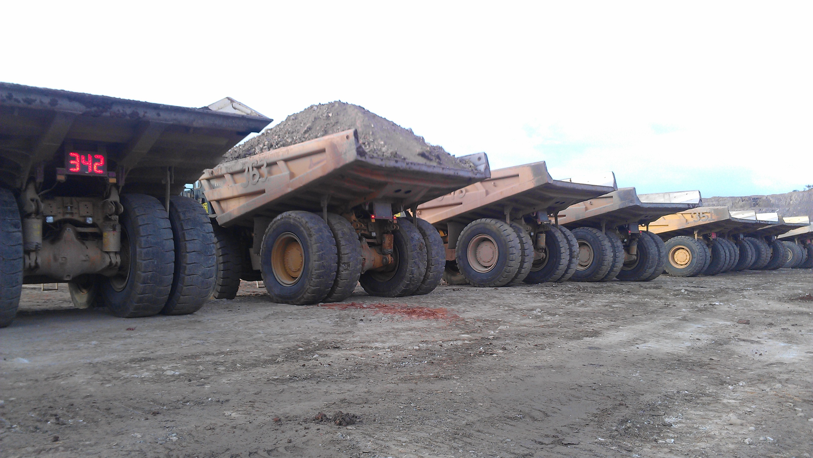

SECTEUR MINIER



Le sol et le sous de la RDC regorge d’une gamme variée de ressources minières ce qui lui a valu le nom de scandale géologique. Le secteur minier classe la RDC en deuxième position après la RSA en Afrique. Le pays figure parmi les plus riches potentiellement.
Fier de son expertise et grâce au concours de ses partenaires vertébrés, OURAGAN assure à ses clients « investisseurs aussi bien nationaux qu’internationaux », la découverte de meilleurs sites miniers, l’exploration, la vente ainsi l’exploitation en partenariat de ces derniers. Soucieux de voir ses clients réussir, OURAGAN vous garantit un accompagnement efficace et adapté aux besoins pas à pas, de l’exploration a l’exploitation effective et vous servir d’éclaireur.